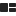
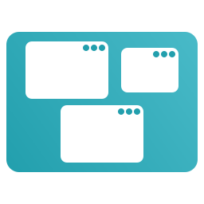
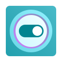
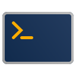

Workspaces
Applications
--:--
fr

Pop!_OS
À propos

Rechercher
Rechercher des applications
Fichiers COSMIC
Firefox
Lecteur Multimédia COSMIC

Paramètres COSMIC
Paramètres de Qt5
Paramètres de Qt6
Store COSMIC

Terminal COSMIC
Éditeur de texte COSMIC
Paramètres…
Verrouiller l'écran
Super + Échap
Se déconnecter
Super + Maj + Échap
‹
›